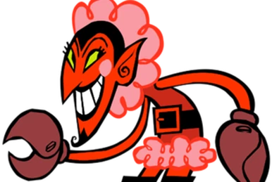
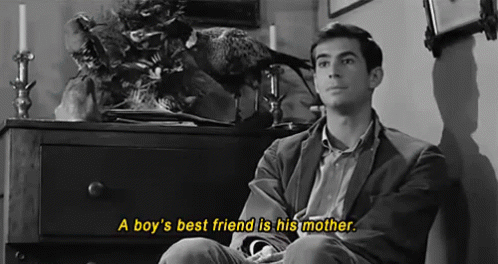
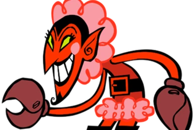
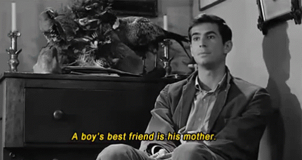

Come up to the lab.
01 may 2024
I grew up watching The Powerpuff Girls. I remember this villain pretty clearly, though I had to look their name up to find this image.

The design, though, stuck with me. For those of you who either didn't watch TPG or also don't remember the name, it's HIM. The villain HIM, described, as per Wikipedia, as "sinister, manipulative, and effeminate." To make a long story short, you'd be surprised how many "HIM"s there are in media: villains who are not quite conforming to gender norms, often without any explanation. This is commonly referred to as queer coding: characters who are, frankly, queer (especially stereotypically) but aren't officially acknowledged as such.
My first experience with this phenomenon was HIM, but my 'favorite' one is Psycho (1960)'s Norman Bates. It's a classic movie, and Norman has the rare benefit of having his gender 'deviancy' named (albeit denied). Psycho was my doorway into The Texas Chainsaw Massacre and Silence of the Lambs, two other classics with their roots in real-life serial killer Ed Gein. This was around the point I realized the staggering amount of queer theming underneath flashy horror titles.

So that's in the closet: somewhere to collect all the strange little ties between the LGBTQ+ community, horror, and pop culture. If you've ever gotten lost in Related articles on Wikipedia, I hope this blog scratches the same itch.

The design, though, stuck with me. For those of you who either didn't watch TPG or also don't remember the name, it's HIM. The villain HIM, described, as per Wikipedia, as "sinister, manipulative, and effeminate." To make a long story short, you'd be surprised how many "HIM"s there are in media: villains who are not quite conforming to gender norms, often without any explanation. This is commonly referred to as queer coding: characters who are, frankly, queer (especially stereotypically) but aren't officially acknowledged as such.
My first experience with this phenomenon was HIM, but my 'favorite' one is Psycho (1960)'s Norman Bates. It's a classic movie, and Norman has the rare benefit of having his gender 'deviancy' named (albeit denied). Psycho was my doorway into The Texas Chainsaw Massacre and Silence of the Lambs, two other classics with their roots in real-life serial killer Ed Gein. This was around the point I realized the staggering amount of queer theming underneath flashy horror titles.

So that's in the closet: somewhere to collect all the strange little ties between the LGBTQ+ community, horror, and pop culture. If you've ever gotten lost in Related articles on Wikipedia, I hope this blog scratches the same itch.